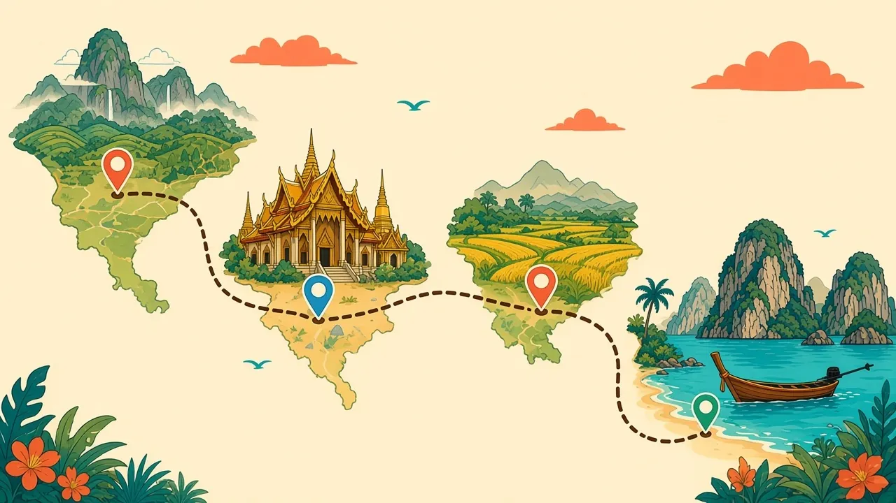

Bangkok
Best for first nights, food, BTS/MRT, and onward tickets. Fly into BKK or DMK; they are not interchangeable. Airport Rail Link from Suvarnabhumi, Grab and Bolt in town.
Find stays on AgodaShort cards, who each place suits, and how people actually get there. Book stays and seats on the operator's current page.
Last checked: 2026-10-21

Best for first nights, food, BTS/MRT, and onward tickets. Fly into BKK or DMK; they are not interchangeable. Airport Rail Link from Suvarnabhumi, Grab and Bolt in town.
Find stays on AgodaBest for temples and the border hills: White Temple, Blue Temple, Golden Triangle, Doi Tung, Doi Mae Salong, tea. No train; bus from Bangkok or Chiang Mai, or fly into CEI.
Buses on 12GoBest for a longer stay, cafes, and a base for the North. Night train to Chiang Mai, buses, or fly into CNX. Haze around February to April is the seasonal caveat.
Trains and buses on 12GoBest for a few slow days in the hills. Van or bus from Chiang Mai. The road is winding; sit if you get motion-sick.
Vans on 12GoBest for the mainland beyond the tourist loop: food and quieter cities. Buses and trains from Bangkok toward the Mekong.
Search 12GoBest for islands on the Gulf: beaches, parties on Phangan's calendar, diving around Tao. Fly into USM (Samui, Bangkok Airways) or take a ferry from the mainland. The Gulf coast is wettest around November, later than the Andaman side (TMD).
Ferries on 12GoBest for Andaman water and limestone. Fly into HKT or the Krabi airport, then van or ferry. Book onward seats in the high season before you land.
Find stays on Agoda